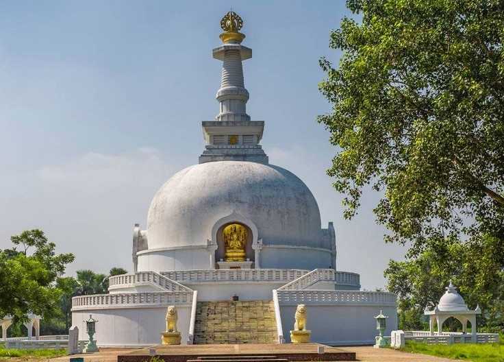

Rajgir
Rajgir is a stunning blend of ancient history and natural beauty, nestled within a valley of five emerald hills. You can take a thrilling ropeway ride to the top of Ratnagiri Hill to visit the dazzling white Vishwa Shanti Stupa, a global symbol of peace. Below, you’ll find sacred bamboo groves and natural hot springs known for their healing mineral waters. It’s the perfect spot to wander through mysterious rock-cut caves or explore the ruins of ancient fortresses where legends of the Mahabharata still echo.